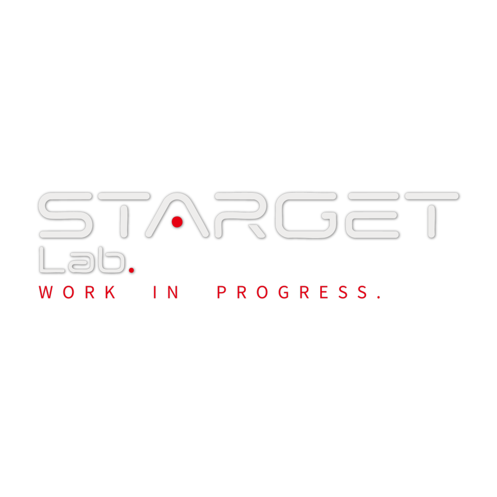
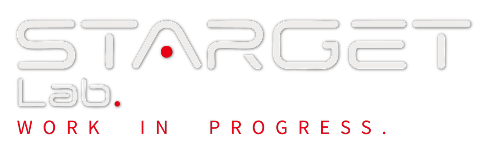

PLAY / STREAM / COMMUNITY

CREATE / CG / MOTION / EXPERIMENT
An open passage to an experimental sound instrument. No additional access key is required.
CG, motion and digital visual production from Tokyo. Open to commissions, collaborations and visual direction for projects in Japan and worldwide.
Tell us what you want to create. A dedicated inquiry form is available on the next page.
 YOUTUBE / PLAY ↗
YOUTUBE / PLAY ↗